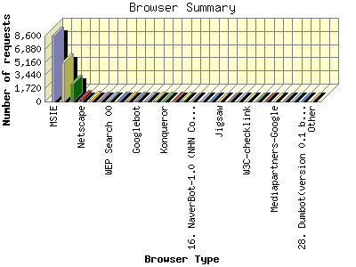
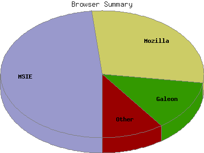

Report generated by Analog 5.91beta1 and Report Magic 2.21
|
Web Server Statistics for "Harish Narayanan (hnarayan) - February 2004" Report generated by Analog 5.91beta1 and Report Magic 2.21 |
The Browser Summary identifies the most popular web browsers used to visit
this site.
Browsers are broken down by recognized categories such as
Netscape Navigator/Communicator, Microsoft Internet Explorer, WebTV, Opera
and the like. Within each category is also a subgroup by version number
such as 'MSIE 5.0' or 'Netscape 4.5'.
This report shows all results. This report is sorted by number of requests.


| Browser Type | Number of requests | Number of bytes transferred | Percentage of the bytes | Percentage of the requests | |
|---|---|---|---|---|---|
| 1. | MSIE | 8,564 | 65.688 MB | 35.83% | 48.40% |
| MSIE/6 | 7,426 | 58.213 MB | 31.75% | 41.97% | |
| MSIE/5 | 1,084 | 6.751 MB | 3.68% | 6.13% | |
| MSIE/4 | 54 | 741.173 KB | 0.40% | 0.30% | |
| 2. | Mozilla | 5,107 | 51.764 MB | 28.23% | 28.86% |
| Mozilla/1 | 5,072 | 50.741 MB | 27.68% | 28.66% | |
| 3. | Galeon | 2,279 | 26.584 MB | 14.50% | 12.88% |
| Galeon/1 | 2,279 | 26.584 MB | 14.50% | 12.88% | |
| 4. | Netscape | 347 | 1.703 MB | 0.93% | 1.96% |
| Netscape/7 | 331 | 1.618 MB | 0.88% | 1.87% | |
| Netscape/4 | 16 | 87.102 KB | 0.05% | 0.09% | |
| 5. | Netscape (compatible) | 180 | 3.153 MB | 1.72% | 1.02% |
| 6. | Opera | 152 | 994.699 KB | 0.53% | 0.86% |
| Opera/7 | 148 | 986.945 KB | 0.53% | 0.84% | |
| 7. | WEP Search 00 | 127 | 4.840 MB | 2.64% | 0.72% |
| 8. | Missigua Locator 1.9 | 123 | 4.690 MB | 2.56% | 0.69% |
| 9. | ia_archiver | 104 | 4.498 MB | 2.45% | 0.59% |
| 10. | Googlebot | 100 | 3.917 MB | 2.14% | 0.56% |
| Googlebot/2 | 100 | 3.917 MB | 2.14% | 0.56% | |
| 11. | W3C_Validator | 99 | 813.396 KB | 0.43% | 0.56% |
| W3C_Validator/1 | 99 | 813.396 KB | 0.43% | 0.56% | |
| 12. | Safari | 76 | 1.177 MB | 0.64% | 0.43% |
| Safari/85 | 49 | 308.340 KB | 0.16% | 0.28% | |
| Safari/125 | 27 | 896.485 KB | 0.48% | 0.15% | |
| 13. | Konqueror | 61 | 462.918 KB | 0.25% | 0.34% |
| Konqueror/3 | 61 | 462.918 KB | 0.25% | 0.34% | |
| 14. | Illinois State Tech Labs | 61 | 2.336 MB | 1.27% | 0.34% |
| 15. | Dolly Productions V1 | 60 | 2.347 MB | 1.28% | 0.34% |
| 16. | NaverBot-1.0 (NHN Corp. | 55 | 2.462 MB | 1.34% | 0.31% |
| NaverBot-1.0 (NHN Corp. / | 55 | 2.462 MB | 1.34% | 0.31% | |
| 17. | Scooter | 55 | 4.880 MB | 2.66% | 0.31% |
| Scooter/3 | 55 | 4.880 MB | 2.66% | 0.31% | |
| 18. | MultiText | 38 | 334.685 KB | 0.18% | 0.21% |
| MultiText/0 | 38 | 334.685 KB | 0.18% | 0.21% | |
| 19. | Jigsaw | 27 | 122.296 KB | 0.07% | 0.15% |
| Jigsaw/2 | 27 | 122.296 KB | 0.07% | 0.15% | |
| 20. | gnome-vfs | 24 | 17.889 KB | 0.01% | 0.14% |
| gnome-vfs/2 | 24 | 17.889 KB | 0.01% | 0.14% | |
| 21. | NetMechanic V4.0 | 14 | 0.000 B | 0.00% | 0.08% |
| 22. | W3C-checklink | 9 | 5.309 KB | 0.00% | 0.05% |
| W3C-checklink/3 | 9 | 5.309 KB | 0.00% | 0.05% | |
| 23. | Green Research, Inc. | 8 | 151.541 KB | 0.08% | 0.04% |
| 24. | webcollage | 8 | 101.595 KB | 0.05% | 0.04% |
| webcollage/1 | 8 | 101.595 KB | 0.05% | 0.04% | |
| 25. | Mediapartners-Google | 3 | 107.423 KB | 0.06% | 0.02% |
| Mediapartners-Google/2 | 3 | 107.423 KB | 0.06% | 0.02% | |
| 26. | Yahoo-VerticalCrawler-FormerWebCrawler | 2 | 22.998 KB | 0.01% | 0.01% |
| Yahoo-VerticalCrawler-FormerWebCrawler/3 | 2 | 22.998 KB | 0.01% | 0.01% | |
| 27. | Java | 1 | 18.998 KB | 0.01% | 0.01% |
| Java/1 | 1 | 18.998 KB | 0.01% | 0.01% | |
| 28. | Dumbot(version 0.1 beta) | 1 | 18.936 KB | 0.01% | 0.01% |
| 29. | Links (0.98; Linux 2.4.22-1-386 i686; 91x37) | 1 | 35.882 KB | 0.02% | 0.01% |
| 30. | Python-urllib | 1 | 24.848 KB | 0.01% | 0.01% |
| Python-urllib/2 | 1 | 24.848 KB | 0.01% | 0.01% | |
| 31. | Links (0.98; Linux 2.4.22-1-386 i686; 114x35) | 1 | 35.882 KB | 0.02% | 0.01% |
| 32. | AnswerBus (http: | 1 | 30.181 KB | 0.02% | 0.01% |
| AnswerBus (http://www | 1 | 30.181 KB | 0.02% | 0.01% | |
| 33. | Generic | 1 | 18.938 KB | 0.01% | 0.01% |
| 34. | Franklin Locator 1.8 | 1 | 19.092 KB | 0.01% | 0.01% |
| 35. | contype | 1 | 0.000 B | 0.00% | 0.01% |
| 36. | psbot | 1 | 13.611 KB | 0.01% | 0.01% |
| psbot/0 | 1 | 13.611 KB | 0.01% | 0.01% | |
| 37. | appie | 1 | 18.938 KB | 0.01% | 0.01% |
| appie/1 | 1 | 18.938 KB | 0.01% | 0.01% | |
This report was generated on August 5, 2004 15:43.
Report time frame February 1, 2004 00:16 to February 29, 2004 22:49.
| Web statistics report produced by: | |
 Analog 5.91beta1 Analog 5.91beta1 |  Report Magic 2.21 Report Magic 2.21 |